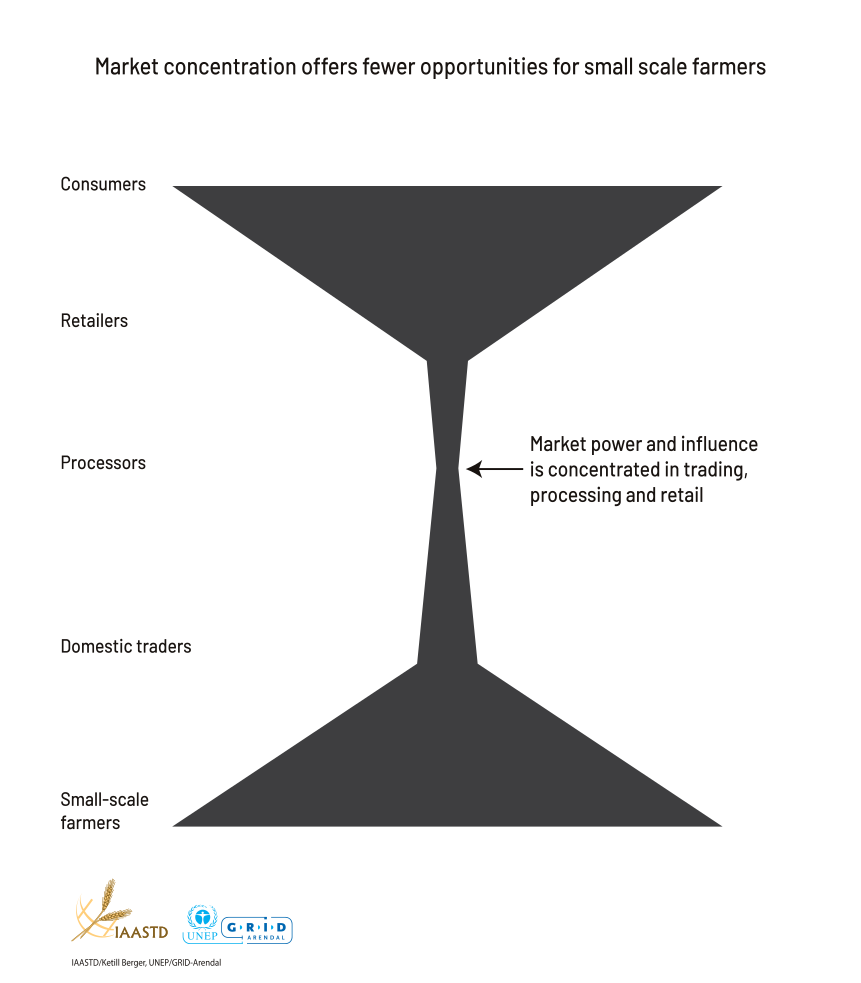

VIEWS

Photo by Manuel on Unsplash
I am interested in what I term gestalts;
picture circumstances which bring together disparate
images or ideas so as to form new meanings and new configurations…
— Robert Heinecken
Gestalt principles are rules of the organization of perceptual scenes. Gestalt is a psychology term which means “unified whole”. It refers to theories of visual perception developed by German psychologists in the 1920s. These theories attempt to describe how people tend to organize visual elements into groups or unified wholes when certain principles are applied.
Gestalt principles are rules of the organization of perceptual scenes. When we look at the world, we usually perceive complex scenes composed of many groups of objects on some background, with the objects themselves consisting of parts, which may be composed of smaller parts, etc.
The basic thesis of gestalt theory might be formulated thus:
there are contexts in which what is happening in the whole cannot be deduced from the characteristics of the separate pieces,
but conversely; what happens to a part of the whole is, in clearcut cases, determined by the laws of the inner structure of its whole.
— Max Wertheimer, Gestalt theory
When you see something, as a whole and in parts, your mind will develop interpretations, connections, and feelings based on past experiences and natural tendencies. Understanding and effectively employing these concepts during the design process can help to ensure that the consumer of your work will see the work as you intended it to be seen and understood.
There is no definitive list of Gestalt principles, but the subject has been a focus of study specifically for information visualization resulting in seven patterns that may be useful as design guidance:
Let’s take a closer look at the principles to explore their application to a design:
This example highlights the use of symmetry.

This example from the UNEP/GRID Arendal Maps and Graphics Library shows Market concentration to explain how:
Agricultural trade is increasingly organized in global chains, dominated by a few large transnational buyers (trading companies, agrifood processors and companies involved in production of commodities). In these globalized chains primary producers often capture only a fraction of the international price of a trade commodity, so the poverty reduction and rural development effects of integration in global supply chains have been far less than optimal.
See the original here: https://www.grida.no/resources/6342.
Generally, Gestalt describes our tendency to infer relationships between the objects we are looking at in a way that goes beyond what is explicitly visible and how a certain layout will influence a viewer to identify groupings, classifications, or similarity.